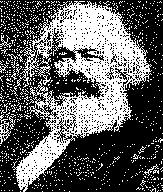

|
V. I. LeninKARL MARX
(A Brief Biographical Sketch |  |
The present English translation of V. I. Lenin's Karl Marx -- a Brief Biograpbical Sketch with an Exposition of Marxism is reprinted, with a few changes, from Lenin's Marx, Engels, Marxism, English edition, Foreign Languages Publishing House, Moscow. 1951. The "Bibliography" has been translated from V. I. Lenin, Collected Works, 4th Russian edition, Vol. XXI, pp. 63-74. The notes at the end of the book are also based on those given in the Russian edition.
|
i | |
|
[Lenin's Biographical Sketch -- DJR |
1] |
|
THE MARXIST DOCTRINE
|
7 |
|
19 | |
|
35 | |
|
40 | |
|
47 | |
|
62 |
page i
The article on Karl Marx now appearing in a separate printing was written by me in 1913 (as far as I can remember) for the Granat Encyclopaedia. A rather detailed bibliography of literature on Marx, mostly foreign, was appended at the end of the article. This has been omitted in the present edition. The editors of the Encyclopaedia, on their part, cut out, for censorship reasons, the end of the article on Marx, namely, the section in which his revolutionary tactics were explained. Unfortunately, I am not in a position to reproduce that end here, because the rough draft remained in my papers somewhere -- in Cracow or in Switzerland. I only remember that in that concluding part of the article I quoted, among other things, the passage from Marx's letter to Engels of April 16, I856, in which he wrote: "The whole thing in Germany will depend on the possibility to back the proletarian revolutlon by some second edition of the Peasant War. Then everything will be splendid." That is what our Mensheviks, who have now sunk to utter betrayal of socialism and to
page ii
desertion to the side of the bourgeoisie, failed to understand in 1905 and after.
N. Lenin
Published in 1918
Published according to
(A Brief Biographical Sketch
with an Exposition of Marxism)
in the pamphlet:
N. Lenin, Karl Marx,
Priboi Publishers, Moscow
the manuscript
page 1
After graduating from the university, Marx moved to Bonn, expecting to become a professor. But the reactionary policy of the government -- which in 1832 deprived Ludwig Feuerbach of his chair and in 1836 refused to allow him to return to the university, and in 1841 forbade the young professor Bruno Bauer to lecture at Bonn -- forced Marx to abandon the idea of pursuing an academic career. At that time the views of the Left Hegelians were developing very rapidly in Germany. Ludwig Feuerbach, particularly after 1836, began to criticize theology and to turn to materialism.
page 2
which in 1841 gained the upper hand in his philosophy (The Essence of Christianity); in 1843 his Principles of the Philosophy of the Future appeared. "One must himself have experienced the liberating effect" of these books, Engels subsequently wrote of these works of Feuerbach. "We" (i.e., the Left Hegelians, including Marx) "all became at once Feuerbachians." At that time some Rhenish radical bourgeois who had certain points in common with the Left Hegelians founded an opposition paper in Cologne, the Rheinische Zeitung (the first number appeared on January 1, 1842). Marx ancd Bruno Bauer were invited to be the chief contributors, and in October 1842 Marx became chief editor and removed from Bonn to Cologne. The revolutionarydemocratic trend of the paper became more and more pronounced under Marx's editorship, and the government first subjected the paper to double and triple censorship and then decided to suppress it altogether on January 1, 1843. Marx had to resign the editorship before that date, but his resignation did not save the paper, which was closed down in March 1843. Of the more important articles contributed by Marx to the Rheinische Zeitung, EngeLs notes, in addition to those indicated below (see Bibliography), an article on the condition of the peasant winegrowers of the Moselle Valley. His journalistic activities convinced Marx that he was not sufficiently acquainted with political economy, and he zealously set out to study it.
In 1843, in Kreuznach, Marx married Jenny von Westphalen, a childhood friend to whom he had been engaged while still a student. His wife came from a reactionary family of the Prussian nobility. Her elder brother was Prussian Minister of the Interior at a most reactionary period, 1850-58. In the autumn of 1843 Marx went to Paris
page 3
in order, together with Arnold Ruge (born 1802, died 1880; a Left Hegelian; in 1825-30, in prison; after 1848, a political exile; after 1866-70, a Bismarckian), to publish a radical magazine abroad. Only one issue of this magazine, Deutsch-Französische Jahrbücher, appeared. It was discontinued owing to the difficulty of secret distribution in Germany and to disagreements with Ruge. In his articles in this magazine Marx already appears as a revolutionary; he advocates the "merciless criticism of everything existing," and in particular the "criticism by weapon,"[2] and appeals to the masses and to the proletariat.
In September 1844 Frederick Engels came to Paris for a few days, and from that time forth became Marx's closest friend. They both took a most active part in the then seething life of the revolutionary groups in Paris (of particular importance was Proudhon's doctrine, which Marx thoroughly demolished in his Poverty of Philosophy, 1847), and, vigorously combating the various doctrines of petty-bourgeois socialism, worked out the theory and tactics of revolutionary proletarian socialism, or communism (Marxism). See Marx's works of this period, 1844-48, in the Bibliography. In 1845, on the insistent demand of the Prussian government, Marx was banished from Paris as a dangerous revolutionary. He removed to Brussels. In the spring of 1847 Marx and Engels joined a secret propaganda society called the Communist League; they took a prominent part in the Second Congress of the League (London, November 1847), and at its request drew up the famous Communist Manifesto, which appeared in February 1848. With the clarity and brilliance of genius, this work outlines the new world conception, consistent materialism, which also embraces the realm of social life, dialectics, as the most comprehensive and profound
page 4
doctrine of development, the theory of the class struggle and of the world-historic revolutionary role of the proletariat -- the creator of a new, communist society.
When the Revolution of February 1848 broke out, Marx was banished from Belgium. He returned to Paris, whence, after the March Revolution, he went to Cologne, Germany. There the Neue Rheinische Zeitung appeared from June 1, 1848, to May 19, 1849; Marx was the chief editor. The new theory was brilliantly corroborated by the course of the revolutionary events of 1848-49, as it has been since corroborated by all proletarian and democratic movements of all countries in the world. The victorious counter-revolution first instigated court proceedings against Marx (he was acquitted on February 9, 1849) and then banished him from Germany (May 16, 1849). Marx first went to Paris, was again banished after the demonstration of June 13, 1849, and then went to London, where he lived to the day of his death.
His life as a political exile was a very hard one, as the correspondence between Marx and Engels (published in 1913) clearly reveals. Marx and his family suffered dire poverty. Were it not for Engels's constant and self-sacrificing financial support, Marx would not only have been unable to finish Capital but would have inevitably perished from want. Moreover, the prevailing doctrines and trends of petty-bourgeois socialism, and of non-proletarian socialism in general, forced Marx to carry on a continuous and merciless fight and sometimes to repel the most savage and monstrous personal attacks (Herr Vogt). Holding aloof from the circles of political exiles, Marx developed his materialist theory in a number of historical works (see Bibliography), devoting his efforts chiefly to the study of political economy. Marx revolutionized this science (see below, "The Marxist Doctrine") in his Contribution to the Critique of Political Economy (1859) and Capital (Vol. I, 1867) .
The period of revival of the democratic movements at the end of the fifties and in the sixties recalled Marx to practical activity. In 1864 (September 28) the International Workingmen's Association -- the famous First International -- was founded in London. Marx was the heart and soul of this organization; he was the author of its first Address and a host of resolutions, declarations and manifestoes. By uniting the labour movement of various countries, by striving to direct into the channel of joint activity the various forms of non-proletarian, pre-Marxist socialism (Mazzini, Proudhon, Bakunin, liberal trade unionism in England, Lassallean vacillations to the Right in Germany, etc.), and by combating the theories of all these sects and schools, Marx hammered out a uniform tactic for the proletarian struggle of the working class in the various countries. After the fall of the Paris Commune (1871) -- of which Marx gave such a profound, clear-cut, brilliant, effective and revolutionary analysis (The Civil War in France, 1871) -- and after the International was split by the Bakunists, the existence of that organization in Europe became impossible. After the Hague Congress of the International (1872) Marx had the General Council of the International transferred to New York. The First International had accomplished its historical role, and it made way for a period of immeasurably larger growth of the labour movement in all the countries of the world, a period, in fact, when the movement grew in breadth and when mass socialist labour parties in individual national states were created.
page 6
His strenuous work in the International and his still more strenuous theoretical occupations completely undermined Marx's health. He continued his work on the reshaping of political economy and the completion of Capital, for which he collected a mass of new material and studied a number of languages (Russian, for instance); but ill-health prevented him from finishing Capital.
On December 2, 1881, his wife died. On March 14, 1883, Marx peacefully passed away in his armchair. He lies buried with his wife in the Highgate Cemetery, London. Of Marx's children some died in childhood in London when the family lived in deep poverty. Three daughters married English and French socialists: Eleanor Aveling, Laura Lafargue and Jenny Longuet. The latter's son is a member of the French Socialist Party.
page 7
Marxism is the system of the views and teachings of Marx. Marx was the genius who continued and completed the three main ideological currents of the nineteenth century, belonging to the three most advanced countries of mankind: classical German philosophy, classical English political economy, and French socialism together with French revolutionary doctrines in general. The remarkable consistency and integrity of Marx's views, acknowledged even by his opponents, views which in their totality constitute modern materialism and modern scientific socialism, as the theory and programme of the labour movement in all the civilized countries of the world, oblige us to present a brief outline of his world conception in general before proceeding to the exposition of the principal content of Marxism, namely, Marx's economic doctrine.
From 1844-45, when his views took shape, Marx was a materialist, in particular a follower of Ludwig Feuerbach, whose weak sides he even later considered to consist exclusively in the fact that his materialism was not consistent
page 8
and comprehensive enough. Marx regarded the historic and "epoch-making" importance of Feuerbach to be that he had resolutely broken away from Hegelian idealism and had proclaimed materialism, which already "in the eighteenth century, especially in France, had been a struggle not only against the existing political institutions and against . . . religion and theology, but also . . . against all metaphysics" (in the sense of "intoxicated speculation" as distinct from "sober philosophy"). (The Holy Family, in the Literarischer Nachlass.) "To Hegel . . ." wrote Marx, "the process of thinking, which, under the name of 'the Idea,' he even transforms into an independent subject, is the demiurgos (the creator, the maker) of the real world. . . . With me, on the contrary, the ideal is nothing else than the material world reflected by the human mind, and translated into forms of thought." (Capital, Vol. I, Afterword to the Second Edition.) In full conformity with this materialist philosophy of Marx's, and expounding it, Frederick Engels wrote in Anti-Dühring (which Marx read in the manuscript): "The unity of the world does not consist in its being. . . . The real unity of the world consists in its materiality, and this is proved . . . by a long and tedious development of philosophy and natural science. . . ." "Motion is the mode of existence of matter. Never anywhere has there been matter without motion, or motion without matter, nor can there be. . . . But if the . . . question is raised what thought and consciousness really are and where they come from, it becomes apparent that they are products of the human brain and that man himself is a product of nature, which has developed in and along with its environment; hence it is self-evident that the products of the human brain, being in the last analysis also products of nature, do not
page 9
contradict the rest of nature's interconnections but are in correspondence with them." "Hegel was an idealist, that is to say, the thoughts within his mind were to him not the more or less abstract images (Abbilder, reflections; Engels sometimes speaks of "imprints") of real things and processes, but, on the contrary, things and their development were to him only the images made real of the 'Idea' existing somewhere or other already before the world existed." In his Ludwig Feuerbach -- in which he expounds his and Marx's views on Feuerbach's philosophy, and which he sent to the press after re-reading an old manuscript written by Marx and himself in 1844-45 on Hegel, Feuerbach and the materialist conception of history -- Frederick Engels writes: "The great basic question of all philosophy, especially of more recent philosophy, is that concerning the relation of thinking to being . . . the relation of spirit to nature . . . which is primary, spirit or nature. . . . The answers which the philosophers gave to this question split them into two great camps. Those who asserted the primacy of spirit to nature and, therefore, in the last instance, assumed world creation in some form or other . . . comprised the camp of idealism. The others, who regarded nature as primary, belong to the various schools of materialism." Any other use of the concepts of (philosophical) idealism and materialism leads only to confusion. Marx decidedly rejected not only idealism, always connected in one way or another with religion, but also the views, especially widespread in our day, of Hume and Kant, agnosticism, criticism, positivism in their various forms, regarding such a philosophy as a "reactionary" concession to idealism and at best a "shamefaced way of surreptitiously accepting materialism, while denying it before the world." On this question, see, in addition to the above-mentioned works of Engels and
page 10
Marx, a letter of Marx to Engels dated December 12, 1868, in which Marx, referring to an utterance of the well-known naturalist Thomas Huxley that was "more materialistic" than usual, and to his recognition that "as long as we actually observe and think, we cannot possibly get away from materialism," reproaches him for leaving a "loophole" for agnosticism, for Humism. It is especially important to note Marx's view on the relation between freedom and necessity: "Freedom is the appreciation of necessity. 'Necessity is blind only in so far as it is not understood'" (Engels, Anti-Dühring). This means the recognition of objective law in nature and of the dialectical transformation of necessity into freedom (in the same manner as the transformation of the unknown, but knowable, "thing-in-itself" into the "thing for-us," of the "essence of things" into "phenomena"). Marx and Engels considered the fundamental shortcomings of the "old" materialism, including the materialism of Feuerbach (and still more of the "vulgar" materialism of Büchner, Vogt and Moleschott), to be: (I) that this materialism was "pre dominantly mechanical," failing to take account of the latest developments of chemistry and biology (in our day it would be necessary to add: and of the electrical theory of matter); (2) that the old materialism was non-historical, non-dialectical (metaphysical, in the sense of anti-dialectical), and did not adhere consistently and comprehensively to the standpoint of development; (3) that it regarded the "human essence" abstractly and not as the "complex" of all (concretely defined historical) "social relations," and therefore only "interpreted" the world, whereas the point is to "change" it; that is to say, it did not understand the importance of "revolutionary, practical activity."
page 11
Hegelian dialectics, as the most comprehensive, the most rich in content, and the most profound doctrine of development, was regarded by Marx and Engels as the greatest achievement of classical German philosophy. They considered every other formulation of the principle of development, of evolution, one-sided and poor in content, and distorting and mutilating the real course of development (which often proceeds by leaps, catastrophes and revolutions) in nature and in society. "Marx and I were pretty well the only people to rescue conscious dialectics" (from the destruction of idealism, including Hegelianism) "and apply it in tbe materialist conception of nature. . . . Nature is the test of dialectics, and it must be said for modern natural science that it has furnished extremely rich" (this was written before the discovery of radium, electrons, the transmutation of elements, etc.!) "and daily increasing materials for this test, and has thus proved that in the last analysis nature's process is dialectical and not metaphysical."
"The great basic thought," Engels writes, "that the world is not to be comprehended as a complex of ready-made things, but as a complex of processes, in which the things apparently stable no less than their mind images in our heads, the concepts, go through an uninterrupted change of coming into being and passing away . . . this great fundamental thought has, especially since the time of Hegel, so thoroughly permeated ordinary consciousness that in this generality it is now scarcely ever contradicted. But to acknowledge this fundamental thought in words and to apply it in reality in detail to each domain of investigation are two different things." "For dialectical philosophy nothing is final, absolute,
page 12
sacred. It reveals the transitory character of everything and in everything; nothing can endure before it except the uninterrupted process of becoming and of passing away, of endless ascendency from the lower to the higher. And dialectical philosophy itself is nothing more than the mere reflection of this process in the thinking brain." Thus, according to Marx, dialectics is "the science of the general laws of motion, both of the external world and of human thought."
This revolutionary side of Hegel's philosophy was adopted and developed by Marx. Dialectical materialism "no longer needs any philosophy standing above the other sciences." Of former philosophy there remains "the science of thought and its laws -- formal logic and dialectics." And dialectics, as understood by Marx, and in conformity with Hegel, includes what is now called the theory of knowledge, or epistemology, which, too, must regard its subject matter historically, studying and generalizing the origin and development of knowledge, the transition from non-knowledge to knowledge.
Nowadays, the idea of development, of evolution, has penetrated the social consciousness almost in its entirety, but by different ways, not by way of the Hegelian philosophy. But as formulated by Marx and Engels on the basis of Hegel, this idea is far more comprehensive, far richer in content than the current idea of evolution. A development that seemingly repeats the stages already passed, but repeats them otherwise, on a higher basis ("negation of negation"), a development, so to speak, in spirals, not in a straight line; -- a development by leaps, catastrophes, revolutions; -- "breaks in continuity"; the transformation of quantity into quality; -- the inner impulses to development, imparted by the contradiction and conflict of the various forces and tendencies
page 13
acting on a given body, or within a given phenomenon, or within a given society; -- the interdependence and the closest, indissoluble connection of all sides of every phenomenon (while history constantly discloses ever new sides), a connection that provides a uniform, law-governed, universal process of motion -- such are some of the features of dialectics as a richer (than the ordinary) doctrine of development. (See Marx's letter to Engels of January 8, 1868, in which he ridicules Stein's "wooden trichotomies" which it would be absurd to confuse with materialist dialectics.)
Having realized the inconsistency, incompleteness, and one-sidedness of the old materialism, Marx became convinced of the necessity of "bringing the science of society . . . into harmony with the materialist foundation, and of reconstructing it thereupon." Since materialism in general explains consciousness as the outcome of being, and not conversely, materialism as applied to the social life of mankind has to explain social consciousness as the outcome of social being. "Technology," writes Marx (Capital, Vol. I), "discloses man's mode of dealing with nature, the immediate process of production by which he sustains his life, and thereby also lays bare the mode of formation of his social relations, and of the mental conceptions that flow from them." In the preface to his Contribution to the Critique of Political Economy, Marx gives an integral formulation of the fundamental principles of materialism as applied to human society and its history, in the following words:
"In the social production of their life, men enter into definite relations that are indispensable and independent
page 14
of their will, relations of production which correspond to a definite stage of development of their material productive forces.
"The sum-total of these relations of production constitutes the economic structure of society, the real foundation, on which rises a legal and political superstructure and to which correspond definite forms of social consciousness. The mode of production of material life conditions the social, political and intellectual life process in general. It is not the consciousness of men that determines their being, but, on the contrary, their social being that determines their consciousness. At a certain stage of their development, the material productive forces of society come in conflict with the existing relations of production, or -- what is but a legal expression for the same thing -- with the property relations within which they have been at work hitherto. From forms of development of the productive forces these relations turn into their fetters. Then begins an epoch of social revolution. With the change of the economic foundation the entire immense superstructure is more or less rapidly transformed. In considering such transformations a distinction should always be made between the material transformation of the economic conditions of production, which can be determined with the precision of natural science, and the legal, political, religious, aesthetic or philosophic -- in short, ideological forms in which men become conscious of this conflict and fight it out.
"Just as our opinion of an individual is not based on what ! he thinks of himself, so can we not judge of such a period of transformation by its own consciousness; on the contrary, this consciousness must be explained rather from the contradictions of material life, from the existing conflict between the social productive forces and the relations of produc-
page 15
tion. . . . In broad outlines Asiatic, ancient, feudal, and modern bourgeois modes of production can be designated as progressive epochs in the economic formation of society." (Cf. Marx's brief formulation in a letter to Engels dated July 7, 1866: "Our theory that the organization of labour is determined by the means of production.")
The discovery of the materialist conception of history, or rather, the consistent continuation and extension of materialism into the domain of social phenomena, removed two chief defects of earlier historical theories. In the first place, they at best examined only the ideological motives of the historical activity of human beings, without investigating what produced these motives, without grasping the objective laws governing the development of the system of social relations, and without discerning the roots of these relations in the degree of development of material production; in the second place, the earlier theories did not cover the activities of the masses of the population, whereas historical materialism made it possible for the first time to study with the accuracy of the natural sciences the social conditions of the life of the masses and the changes in these conditions. Pre-Marxist "sociology" and historiography at best provided an accumulation of raw facts, collected sporadically, and a depiction of certain sides of the historical process. By examining the whole complex of opposing tendencies, by reducing them to precisely definable conditions of life and production of the various classes of society, by discarding subjectivism and arbitrariness in the choice of various "leading" ideas or in their interpretation, and by disclosing that all ideas and all the various tendencies, without exception, have their roots in the condition of the material forces of production, Marxism pointed the way to an all-embracing
page 16
and comprehensive study of the process of rise, development, and decline of social-economic formations. People make their own history. But what determines the motives of people, of the mass of people, that is, what gives rise to the clash of conflicting ideas and strivings; what is the sum-total of all these clashes of the whole mass of human societies; what are the objective conditions of production of material life that form the basis of all historical activity of man; what is the law of development of these conditions -- to all this Marx drew attention and pointed out the way to a scientific study of history as a uniform and law-governed process in all its immense variety and contradictoriness.
That in any given society the strivings of some of its members conflict with the strivings of others, that social life is full of contradictions, that history discloses a struggle between nations and societies as well as within nations and societies, and, in addition, an alternation of periods of revolution and reaction, peace and war, stagnation and rapid progress or decline -- are facts that are generally known. Marxism provided the clue which enables us to discover the laws governing his seeming labyrinth and chaos, namely, the theory of the class struggle. Only a study of the whole complex of strivings of all the members of a given society or group of societies can lead to a scientific definition of the result of these strivings. And the source of the conflicting strivings lies in the difference in the position and mode of life of the classes into which each society is divided. "The history of all hitherto existing society is the history of class struggles," wrote Marx in the Communist Manifesto (except
page 17
the history of the primitive community -- Engels added subsequently). "Freeman and slave, patrician and plebeian, lord and serf, guild-master and journeyman, in a word, oppressor and oppressed, stood in constant opposition to one another, carried on an uninterrupted, now hidden, now open fight, a fight that each time ended, either in a revolutionary re-constitution of society at large, or in the common ruin of the contending classes. . . . The modern bourgeois society that has sprouted from the ruins of feudal society has not done away with class antagonisms. It has but established new classes, new conditions of oppression, new forms of struggle in place of the old ones. Our epoch, the epoch of the bourgeoisie, possesses, however, this distinctive feature: it has simplified the class antagonisms. Society as a whole is more and more splitting up into two great hostile camps, into two great classes directly facing each other: Bourgeoisie and Proletariat." Ever since the Great French Revolution European history has very clearly revealed in a number of countries this real undersurface of events, the struggle of classes. And the Restoration period in France already produced a number of historians (Thierry, Guizot, Mignet, Thiers) who, generalizing from events, were forced to recognize that the class struggle was the key to all French history. And the modern era -- the era of the complete victory of the bourgeoisie, representative institutions, wide (if not universal) suffrage, a cheap, popular daily press, etc., the era of powerful and ever-expanding unions of workers and unions of employers, etc., has revealed even more manifestly (though sometimes in a very one-sided, "peaceful," "constitutional" form) that the class struggle is the mainspring of events. The following passage from Marx's Communist Manifesto will show us what Marx required of social
page 18
science in respect to an objective analysis of the position of each class in modern society in connection with an analysis of the conditions of development of each class: "Of all the classes that stand face to face with the bourgeoisie to-day, the proletariat alone is a really revolutionary class. The other classes decay and finally disappear in the face of modern industry; the proletariat is its special and essential product. The lower middle class, the small manufacturer, the shop keeper, the artisan, the peasant, all these fight against the bourgeoisie, to save from extinction their existence as fractions of the middle class. They are therefore not revolutionary, but conservative. Nay more, they are reactionary, for they try to roll back the wheel of history. If by chance they are revolutionary, they are so only in view of their impending transfer into the proletariat, they thus defend not their present, but their future interests, they desert their own standpoint to place themselves at that of the proletariat." In a number of historical works (see Bibliography), Marx has given us brilliant and profound examples of materialist historiography, of an analysis of the position of each individual class, and sometimes of various groups or strata within a class, showing plainly why and how "every class struggle is a political struggle." The above-quoted passage is an iliustration of what a complex network of social relations and transitional stages between one class and another, from the past to the future, Marx analyzes in order to determine the resultant of historical development.
The most profound, comprehensive and detailed confirmation and application of Marx's theory is his economic doctrine.
page 19
"It is the ultimate aim of this work to lay bare the eco nomic law of motion of modern society" (that is to say, capitalist, bourgeois society), says Marx in the preface to Capital. The investigation of the relations of production in a given, historically defined society, in their genesis, development, and decline -- such is the content of Marx's economic doctrine. In capitalist society it is the production of commodities that dominates, and Marx's analysis therefore begins with an analysis of the commodity.
A commodity is, in the first place, a thing that satisfies a human want; in the second place, it is a thing that can be exchanged for another thing. The utility of a thing makes it a use-value. Exchange-value (or simply, value) presents itself first of all as the ratio, the proportion, in which a certain number of use-values of one sort are exchanged for a certain number of use-values of another sort. Daily experience shows us that millions upon millions of such exchanges are constantly equating with one another every kind
page 20
of use-value, even the most diverse and incomparable. Now, what is there in common between these various things, things constantly equated one with another in a definite system of social relations? What is common to them is that they are products of labour. In exchanging products people equate to one another the most diverse kinds of labour. The production of commodities is a system of social relations in which the individual producers create diverse products (the social division of labour), and in which all the products are equated to one another in exchange. Consequently, what is common to all commodities is not the concrete labour of a definite branch of production, not labour of one particular kind, but abstract human labour -- human labour in general. All the labour power of a given soclety, as represented in the sum-total of values of all commodities, is one and the same human labour power: millions and millions of acts of exchange prove this. And, consequently, each particular commodity represents only a certain share of the socially necessary labour time. The magnitude of value is determined by the amount of socially necessary labour, or by the labour time that is socially necessary for the production of the given commodity, of the given use-value. "Whenever, by an exchange, we equate as values our different products, by that very act, we also equate, as human labour, the different kinds of labour expended upon them. We are not aware of this, nevertheless we do it." As one of the earlier economists said, value is a relation between two persons; only he ought to have added: a relation disguised as a reIation between things. We can understand what value is only when we consider it from the standpoint of the system of social relations of production of one particular historical formation of society, relations, moreover, which
page 21
manifest themselves in the mass phenomenon of exchange, a phenomenon which repeats itself millions upon millions of times. "As values, all commodities are only definite masses of congealed labour time." Having made a detailed analysis of the twofold character of the labour incorporated in commodities, Marx goes on to analyze the forms of value and money. Marx's main task here is to study the genesis of the money form of value, to study the historical process of development of exchange, from single and casual acts of exchange ("elementary or accidental form of value," in which a given quantity of one commodity is exchanged for a given quantity of another) to the universal form of value, in which a number of different commodities are exchanged for one and the same particular commodity, and to the money form of value, when gold becomes this particular commodity, the universal equivalent. Being the highest product of the development of exchange and commodity production, money masks and conceals the social character of all individual producers who are united by the market. Marx anallyzes in very great detail the various functions of money; and it is essential to note here in particular (as generally in the opening chapters of Capital ), that the abstract and seemingly at times purely deductive mode of exposition in reality reproduces a gigantic collection of factual material on the history of the development of exchange and commodity production. "If we consider money, its existence implies a definite stage in the exchange of commodities. The particular functions of money which it performs, either as the mere equivalent of commodities, or as means of circulation, or means of payment, as hoard or as universal money, point, according to the extent and relative preponderance of the one function
page 22
or the other, to very different stages in the process of social production." (Capital, Vol. I.)
At a certain stage in the development of commodity production money becomes transformed into capital. The formula of commodity circulation was C -- M -- C (commodity -- money -- commodity), i.e., the sale of one commodity for the purpose of buying another. The general formula of capital, on the contrary, is M -- C -- M, i.e., purchase for the purpose of selling (at a profit). The increase over the original value of the money put into circulation Marx calls surplus value. The fact of this "growth" of money in capitalist circulation is well known. It is this "growth" which transforms money into capital, as a special, historically defined, social relation of production. Surplus value cannot arise out of commodity circulation, for the latter knows only the exchange of equivalents; it cannot arise out of an addition to price, for the mutual losses and gains of buyers and sellers would equalize one another, whereas what we have here is not an individual phenomenon but a mass, average, social phenomenon. In order to derive surplus value? the owner of money "must . . . find . . . in the market a commodity, whose use-value possesses the peculiar property of being a source of value" -- a commodity whose process of consumption is at the same time a process of creation of value. And such a commodity exists. It is human labour power. Its consumption is labour, and labour creates value. The owner of money buys labour power at its value, which, like the value of every other commodity, is determined by the socially necessary labour time requisite for its production (i.e., the cost of maintaining the worker and his family). Having bought labour power, the owner of money is entitled to use it, that is, to set it to work for the whole day -- twelve hours, let us suppose. Yet, in the course of six hours ("necessary" labour time) the labourer creates product sufficient to cover the cost of his own maintenance; and in the course of the next six hours ("surplus" labour time), he creates "surplus" product, or surplus value, for which the capitalist does not pay. In capital, therefore, from the standpoint of the process of production, two parts must be distinguished: constant capital, expended on means of production (machinery, tools, raw materials, etc.), the value of which, without any change, is transferred (all at once or part by part) to the finished product; and variable capital, expended on labour power. The value of this latter capital is not invariable, but grows in the labour process, creating surplus value. Therefore, to express the degree of exploitation of labour power by capital, surplus value must be compared not with the whole capital but only with the variable capital. Thus in the example given, the rate of surplus value, as Marx calls this ratio, will be 6:6, i.e., 100 per cent.
The historical prerequisites for the genesis of capital were, firstly, the accumulation of a certain sum of money in the hands of individuals and a relatively high level of development of commodity production in general, and, secondly, the existence of a labourer who is "free" in a double sense: free from all constraint or restriction on the sale of his labour power, and free from the land and all means of production in general, a free and unattached labourer, a "proletarian," who cannot subsist except by the sale of his labour power.
page 24
There are two principal methods by which surplus value can be increased: by lengthening the working day ("absolute surplus value"), and by shortemng the necessary working day ("relative surplus value"). Analyzing the first method, Marx gives a most impressive picture of the struggle of the working class to shorten the working day and of governmental interference to lengthen the working day (from the fourteenth century to the seventeenth century) and to shorten the working day (factory legislation of the nineteenth century). Since the appearance of Capital, the history of the working-class movement in all civilized countries of the world has provided a wealth of new facts amplifying this picture.
Analyzing the production of relative surplus value, Marx investigates the three main historlcal stages by which capitalism has increased the productivity of labour:" 1) simple co-operation, 2) division of labour and manufacture; 3) machinery and large-scale industry. How profoundly Marx has here revealed the basic and typical features of capitalist development is incidentally shown by the fact that investigations into the handicraft industries of Russia furnish abundant material illustrating the first two of the mentioned stages. And the revolutionizing effect of large-scale machine industry, described by Marx in 1867, has been revealed in a number of "new" countries (Russia, Japan, etc.) in the course of the half-century that has since elapsed.
To continue. New and important in the highest degree is Marx's analysis of the accumulation of capital, i.e., the transformation of a part of surplus value into capital, its use, not for satisfying the personal needs or whims of the capitalist, but for new production. Marx revealed the mistake of all the earlier classical political economists (from Adam
page 25
Smith on) who assumed that the entire surplus value which is transformed into capitai goes to form variable capital. (In actual fact, it is divided into means of production and variable capital. Of tremendous importance to the process of development of capitalism and its transformation into socialism is the more rapid growth of the constant capital share (of the total capital) as compared with the variable capital share.
The accumulation of capital, by accelerating the supplanting of workers by machinery and creating wealth at one pole and poverty at the other, also gives rise to what is called the "reserve army of labour," to the "relative surplus" of workers, or "capitalist overpopulation," which assumes the most diverse forms and enables capital to expand production at an extremely fast rate. This, in conjunction with credit facilities and the accumulation of capital in means of production, incidentally furnishes the clue to the crises of over production that occur periodically in capitalist countries -- at first at an average of every ten years, and later at more lengthy and less dehnite intervals. From the accumulation of capital under capitalism must be distinguished what is know as primitive accumulation: the forcible divorcement of the worker from the means of production the driving of the peasants from the land, the stealing of communal land, the system of colonies and national debts, protective tariffs, and the like. "Primitive accumulation" creates the "free" proletarian at one pole, and the owner of money, the capitalist, at the other.
The "historical tendency of capitalist accumulation" is described by Marx in the following famous words: "The expropriation of the immediate producers was accomplished with merciless Vandalism, and under the stimulus of passions
page 26
the most infamous, the most sordid, the pettiest, the most meanly odious. Self-earned private property" (of the peasant and handicraftsman), "that is based, so to say, on the fusing together of the isolated, independent labouring individual with the conditions of his labour, is supplanted by capitalistic private property, which rests on exploitation of the nominally free labour of others. . . . That which is now to be expropriated is no longer the labourer working for himself, but the capitalist exploiting many labourers. This expropriation is accomplished by the action of the immanent laws of capitalistic production itself, by the centralization of capital. One capitalist always kills many. Hand in hand with this centralization, or this expropriation of many capitalists by few, develop, on an ever-extending scale, the co-operative form of the labour process, the conscious technical application of science, the methodical cultivation of the soil, the transformation of the instruments of labour into instruments of labour only usable in common, the economizing of all means of production by their use as the means of production of combined, socialized labour, the entanglement of all peoples in the net of the world market, and with this, the international character of the capitalistic regime. Along with the constantly diminishing number of the magnates of capital, who usurp and monopolize all advantages of this process of transformation, grows the mass of misery, oppression, slavery, degradation, exploitation; but with this too grows the revolt of the working class, a class always increasing in numbers, and disciplined, united, organized by the very mechanism of the process of capitalist production itself. The monopoly of capital becomes a fetter upon the mode of production, which has sprung up and flourished along with, and under it. Centralization of the means of production
page 27
and socialization of labour at last reach a point where they become incompatible with their capitalist integument. This integument is burst asunder. The knell of capitalist private property sounds. The expropriators are expropriated." (Capital, Vol. I.)
New and important in the highest degree, further, is the analysis Marx gives in the second volume of Capital of the reproduction of the aggregate social capital. Here, too, Marx deals not with an individual phenomenon but with a mass phenomenon; not with a fractional part of the economy of society but with this economy as a whole. Correcting the mistake of the classical economists mentioned above, Marx divides the entire social production into two big sections: I) production of means of production, and II) production of articles of consumption, and examines in detail, with arithmetical examples, the circulation of the aggregate social capital -- both in the case of reproduction in its former dimensions and in the case of accumulation. The third volume of Capital solves the problem of the formation of the average rate of profit on the basis of the law of value. The immense advance in economic science made by Marx consists in the fact that he conducts his analysis from the standpoint of mass economic phenomena, of the social economy as a whole, and not from the standpoint of individual cases or of the external, superficial aspects of competition, to which vulgar political economy and the modern "theory of marginal utility" are frequently limited. Marx first analyzes the origin of surplus value, and then goes on to consider its division into profit, interest, and ground rent. Profit is the ratio between the surplus value and the total capital invested in an undertaking. Capital with a "high organic composition" (i.e., with a preponderance of constant capital over
page 28
variable capital exceeding the social average) yields a lower than average rate of profit; capital with a "low organic composition" yields a higher than average rate of profit. The competition of capitals, and the freedom with which they transfer from one branch to another equate the rate of profit to the average in both cases. The sum-total of the values of all the commodities in a given society coincides with the sum-total of prices of the commodities; but, owing to competition, in individual undertakings and branches of production commodities are sold not at their values but at the prices of production (or production prices), which are equal to the expended capital plus the average profit.
In this way the well-known and indisputable fact of the divergence between prices and values and of the equalization of profits is fully explained by Marx on the basis of the law of value; for the sum-total of values of all commodities coincides with the sum-total of prices. However, the equation of (social) value to (individual) prices does not take place simply and directly, but in a very complex way. It is quite natural that in a society of separate producers of commodities, who are united only by the market, law can reveal itself only as an average, social, mass law, when individual deviations to one side or the other mutually compensate one another.
An increase in the productivity of labour implies a more rapid growth of constant capital as compared with variable capital. And since surplus value is a function of variable capital alone, it is obvious that the rate of profit (the ratio of surplus value to the whole capitai; and not to its variable part alone) tends to fall. Marx makes a detailed analysis of this tendency and of a number of circumstances that conceal or counteract it. Without pausing to give an account of
page 29
the extremely interesting sections of the third volume of Capital devoted to usurer's capital, commercial capital and money capital, we pass to the most important section, the theory of ground rent. Owing to the fact that the land area is limited and, in capitalist countries, is all occupied by individual private owners, the price of production of agricultural products is determined by the cost of production not on average soil, but on the worst soil, not under average conditions, but under the worst conditions of delivery of produce to the market. The difference between this price and the price of production on better soil (or under better conditions) constitutes differential rent. Analyzing this in detail, and showing how it arises out of the difference in fertility of different plots of land and the difference in the amount of capital invested in land, Marx fully exposed (see also Theories of Surplus Value, in which the criticism of Rodbertus deserves particular attention) the error of Ricardo, who considered that differential rent is derived only when there is a successive transition from better land to worse. On the contrary, there may be inverse transitions, land may pass from one category into others (owing to advances in agricultural technique, the growth of towns, and so on), and the notorious "law of diminishing returns" is a profound error which charges nature with the defects, limitations and contradictions of captalism. Further, the equalization of profit in all branches of industry and national economy in general presupposes complete freedom of competition and the free flow of capital from one branch to another. But the private ownership of land creates monopoly, which hinders this free flow. Owing to this monopoly, the products of agriculture, which is distinguished by a lower organic composition of capital, and, consequently, by an
page 30
individually higher rate of profit, do not participate in the entirely free process of equalization of the rate of profit; the landowner, being a monopolist, can keep the price above the average, and this monopoly price engenders absolute rent. Differential rent cannot be done away with under capitalism, but absolute rent can -- for instance, by the natlonalization of the land, by making it the property of the state. Making the land the property of the state would undermine the monopoly of private landowners, and would lead to a more systematic and complete application of freedom of competition in the domain of agriculture. And, therefore, Marx points out, in the course of history bourgeois radicals have again and again advanced this progressive bourgeois demand for the nationalization of the land, which, however, frightens away the majority of the bourgeoisie, because it too closely "touches" another monopoly, which is particularly important and "sensitive" in our day -- the monopoly of the means of production in general. (Marx gives a remarkably popular, concise, and clear exposition of his theory of the average rate of profit on capital and of absolute ground rent in a letter to Engels, dated August 2, 1862. See Briefwechsel, Vol. III, pp. 77-81; also the letter of August 9, 1862, ibid., pp. 86-87.[3]) For the history of ground rent it is also important to note Marx's analysis showing how labour rent (when the peasant creates surplus product by labouring on the lord's land) is transformed into rent in produce or in kind (when the peasant creates surplus product on his own land and cedes it to the lord due to "non-economic constraint"), then into money rent (which is rent in kind transformed into money, the quitrent of old Russia, due to the development of commodity production), and finally into capitalist rent, when the peasant is replaced by the agricuI-
page 31
tural entrepreneur, who cultivates the soil with the help of wage labour. In connection with this analysis of the "genesis of capitalist ground rent," note should be made of a number of penetrating ideas (especially important for backward countries like Russia) expressed by Marx on the evolution of capitalism in agriculture. "The transformation of rent in kind into money rent is not only necessarily accompanied, but even anticipated by the formation of a class of propertyless day labourers, who hire themselves out for wages. During the period of their rise, when this new class appears but sporadically, the custom necessarily develops among the better-situated tributary farmers of exploiting agricultural labourers for their own account, just as the wealthier serfs in feudal times used to employ serfs for their own benefit. In this way they gradually acquire the ability to accumulate a certain amount of wealth and to transform themselves even into future capitalists. The old self-employing possessors of the land thus give rise among themselves to a nursery for capitalist tenants, whose development is conditioned upon the general development of capitalist production outside of the rural districts." (Capital, Vol. III, p. 332.) "The expropriation and eviction of a part of the agricultural population not only set free for industrial capital, the labourers, their means of subsistence, and material for labour; it also created the home market." (Capital, Vol. I, p. 778.) The impoverishment and ruin of the agricultural population lead, in their turn, to the formation of a reserve army of labour for capital. In every capitalist country "part of the agricultural population is therefore constantly on the point of passing over into an urban or manufacturing proletariat. . . . (Manufacture is used here in the sense of all non-agricultural industries.) This source of relative surplus population is thus
page 32
constantly flowing. . . . The agricultural labourer is therefore reduced to the minimum of wages, and always stands with one foot already in the swamp of pauperism." (Capital, Vol. I, p. 668.) The private ownership of the peasant in the land he tills constitutes the basis of small-scale production and the condition for its prospering and attaining a classical form. But such small-scale production is compatible only with a narrow and primitive framework of production and society. Under capitalism the "exploitation of the peasants differs only in form from the exploitation of the industrial proletariat. The exploiter is the same: capital. The individual capitalists exploit the individual peasants through mortgages and usury; the capitalist class exploits the peasant class through the state taxes." (The Class Struggles in France.) "The small holding of the peasant is now only the pretext that allows the capitalist to draw profits, interest and rent from the soil, while leaving it to the tiller of the soil himself to see how he can extract his wages." (The Eighteenth Brumaire.) As a rule the peasant cedes to capitalist society, i.e., to the capitalist class, even a part of the wages, sinking "to the level of the Irish tenant farmer -- all under the pretence of being a private proprietor." (The Class Struggles in France.) What is "one of the causes which keeps the price of cereals lower in countries with a predominance of small peasant land proprietorship than in countries with a capitalist mode of production"? (Capital, Vol. III, p. 340.) It is that the peasant cedes to society (i.e., to the capitalist class) part of his surplus product without an equivalent. "This lower price (of cereals and other agricultural produce) is consequently a result of the poverty of the producers and by no means of the productivity of their labour." (Capital. Vol. III, p. 340.) The small-
page 33
holding system, which is the normal form of small-scale production, deteriorates, collapses, perishes under capitalism. "Proprietorship of land parcels excludes by its very nature the development of the social productive forces of labour, social forms of labour, social concentration of capital, large-scale cattle raising, and a progressive application of science. Usury and a taxation system must impoverish it everywhere. The expenditure of capital in the price of the land withdraws this capital from cultivation. An infinite dissipation of means of production and an isolation of the producers themselves go with it." (Co-operative societies, i.e., associations of small peasants, while playing an extremely progressive bourgeois role, only weaken this tendency without eliminating it; nor must it be forgotten that these co-operative societies do much for the well-to-do peasants, and very little, almost nothing, for the mass of poor peasants; and then the associations themselves become exploiters of wage labour.) "Also an enormous waste of human energy. A progressive deterioration of the conditions of production and a raising of the price of means of production is a necessary law of small peasants' property." In agriculture, as in industry, capitalism transforms the process of production only at the price of the "martyrdom of the producer." "The dispersion of the rural labourers over larger areas breaks their power of resistance while concentration increases that of the town operatives. In modern agriculture, as in the urban industries, the increased productiveness and quantity of the labour set in motion are bought at the cost of laying waste and consuming by disease labour power itself. Moreover, all progress in capitalistic agriculture is a progress in the art, not only of robbing the labourer, but of robbing the soil. . . . Capitalist production,
page 34
therefore, develops technology, and the combining together of various processes into a social whole, only by sapping the original sources of all wealth -- the soil and the labourer." (Capital, Vol. I, end of Chap. 15.)
page 35
From the foregoing it is evident that Marx deduces the inevitability of the transformation of capitalist society into socialist society wholly and exclusively from the economic law of motion of contemporary society. The socialization of labour, which is advancing ever more rapidly in thousands of forms, and which has manifested itself very strikingly during the half-century that has elapsed since the death of Marx in the growth of large-scale production, capitalist cartels, syndicates and trusts, as well as in the gigantic increase in the dimensions and power of finance capital, forms the chief material foundation for the inevitable coming of socialism. The intellectual and moral driving force and the physical executant of this transformation is the proletariat, which is trained by capitalism itself. The struggle of the proletariat against the bourgeoisie, which manifests itself in various and, as to its content, increasingly multifarious forms, inevitably becomes a political struggle aiming at the conquest of political power by the proletariat ("the dictatorship of the proletariat"). The socialization of production is bound to lead to the conversion of the means of production into the property of society, to the "expropriation of the expropriators." This conversion
page 36
will directly result in an immense increase in productivity of labour, a reduction of working hours, and the replacement of the remnants, the ruins of small-scale, primitive, disunited production by collective and improved labour. Capitalism finally snaps the bond between agriculture and industry; but at the same time, in its highest development it prepares new elements of this bond, of a union between industry and agriculture based on the conscious application of science and the combination of collective labour, and on a redistribution of the human population (putting an end at one and the same time to rural remoteness, isolation and barbarism, and to the unnatural concentration of vast masses of people in big cities). A new form of family, new conditions in the status of women and in the upbringing of the younger generation are being prepared by the highest forms of modern capitalism: female and child labour and the break-up of the patriarchal family by capitalism inevitably assume the most terrible, disastrous, and repulsive forms in modern society. Nevertheless "modern industry, by assigning as it does an important part in the socially organized process of production, outside the domestic sphere, to women, to young persons, and to children of both sexes, creates a new economic foundation for a higher form of the family and of the relations between the sexes. It is, of course, just as absurd to hold the Teutonic-Christian form of the family to be absolute and final as it would be to apply that character to the ancient Roman, the ancient Greek, or the Eastern forms which, moreover, taken together form a series in historic development. Moreover, it is obvious that the fact of the collective working group being composed of individuals of both sexes and all ages, must necessarily, under suitable conditions, become a source of humane development; although in its spontaneously developed, brutal, capitalistic
page 37
form, where the labourer exists for the process of production, and not the process of production for the labourer, that fact is a pestiferous source of corruption and slavery." (Capital, Vol. I, end of Chap. 15.) In the factory system is to be found "the germ of the education of the future, an education that will, in the case of every child over a given age, combine productive labour with instruction and gymnastics, not only as one of the methods of adding to the efficiency of social production, but as the only method of producing fully developed human beings." (Ibid.) Marx's socialism puts the question of nationality and of the state on the same historical footing, not only in the sense of explaining the past but also in the sense of a fearless forecast of the future and of bold practical action for its achievement. Natitons are an inevitable product, an inevitable form in the bourgeois epoch of social development. The working class could not grow strong, could not become mature and take shape without "constituting itself within the nation," without being "national" ("though not in the bourgeois sense of the word"). But the development of capitalism more and more breaks down national barrers, destroys national seclusion, substitutes class antagonisms for national antagonisms. It is, therefore, perfectly true that in the developed capitalist countries "the workingmen have no country" and that "united action" by the workers, of the civilized countries at least, "is one of the first conditions for the emancipation of the proletariat" (Communist Manifesto). The state, which is organized violence, inevitably came into being at a definite stage in the development of society, when society had split into irreconcilable classes, and when it could not exist without an "authority" ostensibly standing above society and to a certain degree separate from society. Arising out of class contradictions,
page 38
the state becomes "the state of the most powerful, economically dominant class, which, through the medium of the state, becomes also the politically dominant class, and thus acquires new means of holding down and exploiting the oppressed class. Thus, the state of antiquity was above all the state of the slave-owners for the purpose of holding down the slaves, as the feudal state was the organ of the nobility for holding down the peasant serfs and bondsmen, and the modern representative state is an instrument of exploitation of wage labour by capital." (Engels, The Origin of the Family, Private Property and the State, a work in which the writer expounds his own and Marx's views.) Even the freest and most progressive form of the bourgeois state, the democratic republic, in no way removes this fact, but merely changes its form (connection between the government and the stock exchange, corruption -- direct and indirect -- of the officialdom and the press, etc.). Socialism, by leading to the abolition of classes, will thereby lead to the abolition of the state. "The first act," writes Engels in Anti-Dühring, "in which the state realIy comes forward as the representative of society as a whole -- the taking possession of the means of production in the name of society -- is at the same time its last independent act as a state. The interference of the state power in social relations becomes superfluous in one sphere after another, and then ceases of itself. The government of persons is replaced by the administration of things and the direction of the processes of production. The state is not 'abolished,' it withers away." "The society that will organize production on the basis of a free and equal association of the producers will put the whole machinery of state where it will then belong: into the museum of antiquities, by the side of the spinning
page 39
wheel and the bronze axe." (Engels, The Origin of the Family, Private Property and the State.)
Finally, as regards the attitude of Marx's socialism towards the small peasantry which will continue to exist in the period of the expropriation of the expropriators, we must refer to a declaration made by Engels which expresses Marx's views: ". . . when we are in possession of state power we shall not even think of forcibly expropriating the small peasants (regardless of whether with or without compensation), as we shall have to do in the case of the big landowners. Our task relative to the small peasant consists, in the first place, in effecting a transition of his private enterprise and private possession to co-operative ones, not forcibly but by dint of example and the proffer of social assistance for this purpose. And then of course we shall have ample means of showing to the small peasant prospective advantages that must be obvious to him even today." (Engels, The Peasant Question in France and Germany,[4] p. 17, Alexeyeva ed.; there are mistakes in the Russian translation. Original in the Neue Zeit.)
page 40
Having as early as 1844-45 examined one of the chief defects of the earlier materialism, namely, its inability to understand the conditions or appreciate the importance of practical revolutionary activity, Marx, along with his theoretical work, all his life devoted unrelaxed attention to the tactical problems of the class struggle of the proletariat. An Immense amount of material bearing on this is contained in all the works of Marx and particularly in the four volumes of his correspondence with Engels, published in 1913. This material is still far from having been assembled, collected, studied and examined. We shall therefore have to confine ourselves here to the most general and brief remarks, emphasizing that Marx justly considered that without this side materialism was incomplete, one-sided, and lifeless. Marx defined the fundamental task of proletarian tactics in strict conformity with all the postulates of his materialist-dialectical conception. Only an objective consideration of the sum-total of
page 41
reciprocal relations of all the classes of a given society without exception, and, consequently, a consideration of the objective stage of development of that society and of the reciprocal relations between it and other societies, can serve as a basis for correct tactics of the advanced class. At the same time, all classes and all countries are regarded not statically, but dynamically, i.e., not in a state of immobility, but in motion (the laws of which are determined by the economic conditions of existence of each class). Motion, in its turn, is regarded not only from the standpoint of the past, but also from the standpoint of the future, and, at the same time, not in accordance with the vulgar conception of the "evolutionists," who see only slow changes, but dialectically: "in developments of such magnitude twenty years are no more than a day," Marx wrote to Engels, "although later there may come days in which twenty years are concentrated." (Briefwechsel, Vol. III, p. I27.)[5] At each stage of development, at each moment, proletarian tactics must take account of this objectively inevitable dialectics of human history, on the one hand utilizing the periods of political stagnation or of sluggish, so-called "peaceful" development in order to develop the class consciousness, strength and fighting capacity of the advanced class, and, on the other hand, conducting all this work of utilization towards the "final aim" of the movement of this class and towards the creation in it of the faculty for practically performing great tasks in the great days in which "twenty years are concentrated." Two of Marx's arguments are of special importance in this connection; one of these is contained in The Poverty of Philosophy and concerns the economic struggle and economic organizations of the proletariat; the other is contained in the Communist Manifesto and concerns the political tasks of the proletariat. The first argument runs as follows: "Large-scale industry concentrates in one place a crowd of people unknown to one another. Competition divides their interests. But the maintenance of
page 42
wages, this common interest which they have against their boss, unites them in a common thought of resistance -- combination . . . Combinations, at first isolated, constitute themselves into groups . . . and in face of always united capital) the maintenance of the association becomes more necessary to them [i.e., the workers] than that of wages. . . . In this struggle -- a veritable civil war -- are united and developed all the elements necessary for a coming battle. Once it has reached this point, association takes on a political character." Here we have the programme and tactics of the economic struggle and of the trade union movement for several decades to come, for all the long period in which the proletariat will muster its forces for the "coming battle." Side by side with this must be placed numerous references by Marx and Engels to the example of the British labour movement; how industrial "prosperity" leads to attempts "to buy the workers" (Briefwechsel, Vol. I, p. 136),[6] to divert them from the struggle; how this prosperity generally "demoralizes the workers" (Vol. II, p. 218); how the British proletariat becomes "bourgeoisified" -- "this most bourgeois of all nations is apparently aiming ultimately at the possession of a bourgeois aristocracy and a bourgeois proletariat as well as a bourgeoisie" (Vol. II, p. 290);[7] how its "revolutionary energy" oozes away (Vol. III, p. 124); how it will be necessary to wait a more or less long time before "the English workers will free themselves from their apparent bourgeois infection" (Vol. III, p. 127); how the British labour movement "lacks the mettle of the Chartists" (1866; Vol. III, p. 305);[8] how the British workers' leaders are becoming a type midway between "a radical bourgeois and a worker" (in reference to Holyoake, Vol. IV, p. 209); how, owing to British monopoly, and as long as this monopoly lasts, "the British working-
page 43
man will not budge' (Vol. IV, p. 433).[9] The tactics of the economic struggle, in connection with the general course (and outcome) of the labour movement, are here considered from a remarkably broad, comprehensive, dialectical, and genuinely revolutionary standpoint.
The Communist Manifesto set forth the fundamental Marxist principle on the tactics of the political struggle: "The Communists fight for the attainment of the immediate aims, for the enforcement of the momentary interests of the working class; but in the movement of the present, they also represent and take care of the future of that movement." That was why in 1848 Marx supported the party of the "agrarian revolution" in Poland, "that party which fomented the insurrection of Cracow in 1846." In Germany in 1848 and 1849 Marx supported the extreme revolutionary democracy, and subsequently never retracted what he had then said about tactics. He regarded the German bourgeoisie as an element which was "inclined from the very beginning to betray the people" (only an alliance with the peasantry could have brought the bourgeoisie the integral fulfilment of its tasks) "and compromise with the crowned representative of the old society." Here is Marx's summary of the analysis of the class position of the German bourgeoisie in the era of the bourgeois-democratic revolution -- an analysis which, incidentally, is a sample of that materialism which examines society in motion, and, moreover, not only from the side of the motion which is directed backwards: Without faith in itself, without faith in the people, grumbling at those above, trembling before those below . . . intimidated by the world storm . . . no energy in any respect, plagiarism in every respect . . . without initiative . . . an execrable old man, who saw himself doomed to guide and deflect the first
page 44
youthful impulses of a robust people in his own senile in terests. . . ." (Neue Rheinische Zeitung, 1848; see Literarischer Nachlass, Vol. III, p. 2l2.)[10] About twenty years later, in a letter to Engels (Briefwechsel, Vol. III, p. 224), Marx declared that the cause of the failure of the Revolution of 1848 was that the bourgeoisie had preferred peace with slavery to the mere prospect of a fight for freedom. When the revolutionary era of 1848-49 ended, Marx opposed every attempt to play at revolution (the fight he put up against Schapper and Willich), and insisted on ability to work in the new phase which in a seemingly "peaceful" way was preparing for new revolutions. The spirit in which Marx wanted the work to be carried on is shown by his estimate of the situation in Germany in 1856, the blackest period of reaction: ''The whole thing in Germany will depend on the possibility to back the proletarian revolution by some second edition of the Peasant War." (Briefwechsel, Vol. II, p. 108.)[11] As long as the democratic (bourgeois) revolution in Germany was not finished, Marx wholly concentrated attention in the tactics of the socialist proletariat on devevoping the democratic energy of the peasantry. He held that Lasalle's attitude was "objectively . . . a betrayal of the whole workers' movement to Prussia" (Vol. III, p. 210), incidentally because Lassalle connived at the actions of the Junkers and Prussian nationalism. "In a predominantly agricultural country," wrote Engels in 1865, exchanging ideas with Marx on the subject of an intended joint statement by them in the press, ". . . it is dastardly to make an exclusive attack on the bourgeoisie in the name of the industrial proletariat but never to devote a word to the patriarchal exploitation of the rural proletariat under the lash of the great feudal aristocracy." (Vol. III, p. 2I7.)[12] From 1864 to 1870, when the era
page 45
of the completion of the bourgeois-democratic revolution Germany, the era of the efforts of the exploiting classes Prussia and Austria to complete this revolution in one or another from above, was coming to an end, Marx only condemned Lassalle, who was coquetting with Bismarck, but also corrected Liebknecht, who had inclined towards "Austrophilism" and the defence of particularism; Marx demanded revolutionary tactics which would combat both Bismarck and the Austrophiles with equal ruthlessness, tactics which would not be adapted to the "victor," the Prussian Junker, but which would immediately renew the revolutionary struggle against him also on the basis created by the Prussian military victories. (Briefwechsel, Vol. III, pp. 134, 136, 147, 179, 204, 210, 215, 418, 437, 440-41.)[13] In the famous Address of the International of September 9, 1870, Marx warned the French proletariat against an untimely uprising; but when the uprising nevertheIess took place (1871), Marx enthusiastically hailed the revolutionary initiative of the masses, who were "storming heaven" (letter of Marx to Kugelmann). The defeat of the revolutionary action in this situation, as in many others, was, from the standpoint of Marx's dialectical materialism, a lesser evil in the general course and outcome of the proletarian struggle than the abandonment of a position already occupied, than a surrender without battle. Such a surrender would have demoralized the proletariat and undermined its fighting capacity. Fully appreciating the use of legal means of struggle during periods when political stagnation prevails and bourgeois legality dominates, Marx, in 1877 and 1878, after the passage of the Anti-Socialist Law, sharply condemned Most's "revolutionary phrases"; but he no less, if not more sharply, attacked the opportunism that had temporarily gained sway in the
page 46
official Social-Democratic Party, which did not at once display resoluteness, firmness, revolutionary spirit and a readiness to resort to an illegal struggle in response to the Anti-Socialist Law. (Briefwechsel, Vol. IV, pp. 397, 404, 418, 422, 424;[14] cf. also letters to Sorge.)
page 47
page 48
pamphlet) and "On the Jewish Question" (likewise in the Literarischer Nachlass, and issued as a pamphlet by the Znaniye Publishers in their Cheap Library, No. 210). In 1845, Marx and Engels jointly published a pamphlet in Frankfort-on-Main, entitled The Holy Family, Against Bruno Bauer and Co. (included in the Literarischer Nachlass; two Russian editions as pamphlets: one by Novy Golos in St. Petersburg, 1906, the other by Vestnik Znaniya, St. Petersburg, 1907). To the spring of 1845 belong Marx's theses on Feuerbach (published as an appendix to Frederick Engels's pamphlet entitled Ludwig Feuerbach; a Russian translation exists). In 1845-47 Marx wrote a number of articles (most of which have not been collected, republished, or translated into Russian) in the papers Vorwärts!, Paris; Deutsche-Brüsseler-Zeitung (1847); Westphälisches Dampfboot (Bielefeld, 1845-48); and Gesellschafts spiegel (Elberfeld, 1846). In 1847 Marx wrote his fundamental work against Proudhon, The Poverty of Philosophy, a reply to Proudhon's work "The Philosophy of Poverty ". The book was published in Brussels and Paris (there have been three Russian editions by Novy Mir, one by G. Lvovich, one by Alexeyeva, and one by Prosveshcheniye, all in 1905 and 1906). In 1848 there was published in Brussels the Speech on Free Trade (Russian translation exists), then in London, in collaboration with Frederick Engels, the famous Manifesto of the Communist Party, translated into nearly all the European languages and into a number of other languages (about eight Russian translations, 1905-06; these editions, by Molot, Kolokol, Alexeyeva, etc., most of which have been confiscated, appeared under various titles: Communist Manifesto, On Communism, Social Classes and Communism, Capitalism and Communism, Philosophy of History; a complete and the most accurate translation of this as well as
page 49
of other works of Marx will be found in the editions of the Emancipation of Labour group issued abroad). From June 1, 1848, to May 19, 1849, the Neue Rheinische Zeitung was published in Cologne with Marx as the actual editor-in-chief. His numerous articles published in that paper, which to this very day remains the best and unsurpassed organ of the revolutionary proletariat, have not been fully collected and reprinted. The most important of them were included in the Literarischer Nachlass. Wage-Labour and Capital, published in that paper, has been repeatedly issued as a pamphlet (four Russian editions by Kozman, Molot, Myagkov, and Lvovich, 1905-06); also from the same paper The Liberals at the Helm (published by Znaniye Publishers in their Cheap Library, No. 272, St. Petersburg, 1906). In 1849 Marx published in Cologne Two Political Trials (two speeches in his own defence delivered by Marx, who was acquitted by the jury, when facing trial on the charge of having violated the press law and having called for armed resistance against the government. Russian translations available in five editions brought out in 1905 and 1906 by Alexeyeva, Molot, Myagkov, Znaniye and Novy Mir ). In 1850 Marx published in Hamburg six issues of the magazine Neue Rheinische Zeitung; the most important articles published in that magazine were later included in the Literarischer Nachlass. Especially note worthy are Marx's articles republished by Engels in 1895 in a pamphlet entitled Class Struggles in France, 1848-1850 (Russian translations, published by M. Malykh "Library", No. 59-60; also in the Collection of Historical Works, translated by Bazarov and Stepanov and published by Skirmunt, St. Petersburg, 1906; also in Thoughts and Views of the 20th Century, St. Petersburg, 1912). In 1852 there was published in New York Marx's pamphlet, The Eighteenth Brumaire of Louis Bonaparte (Russian translation in the collections just mentioned). In the
page 50
same year, a pamphlet was published in London under the title Revelations About the Cologne Communist Trial (Russian translation entitled The Cologne Trial of the Communards, Popular Science Library, No. 43, St. Petersburg, Oct. 28, I906). From August 1851, until 1862,[1] Marx was a steady contributor to the New York Tribune, where many of his articles appeared without signature, as editorials. Particularly outstanding among these articles are those which were republished after the death of Marx and Engels in a German translation under the title, Revolution and Counter-Revolution in Germany (there are Russian translations in two collections translated by Bazarov and Stepanov, and then, in pamphlet form, in five editions brought out in 1905-06 by Alexeyeva, Obshchestvennaya Polza, Novy Mir, Vseobshchaya Biblioteka and Molot ). Some of Marx's articles in the Tribune were later published in London as separate pamphlets, as, for instance, the one on Palmerston, published in 1856; Revelations Concerning the Diplomatic History of the Eighteenth Century (revealing the continuous venal dependence of the British Liberal Ministers upon Russia); and others. After Marx's death, his daughter, Eleanor Aveling, published a number of his Tribune articles on the Oriental question under the title The Eastern Question, London, 1897. A part has been translated into Russian: War and Revolution, Marx and Engels: Unpublished Articles (1852, 1853, 1854 ), Kharkov, 1919, Issue I (Nasha Mysl Library). From the end of 1854 and during 1855 Marx contributed to the paper Neue Oder Zeitung, and in 1861-62 to the Viennese paper Presse. Those
page 51
articles have not been collected, and only a few of them were reprinted in the Neue Zeit, as was also the case with Marx's numerous letters. The same is true about Marx's articles from Das Volk (London, 1859) concerning the diplomatic history of the Italian War of 1859. In 1859 Marx's work, A Contribution to the Critique of Political Economy, appeared in Berlin (Russian translations: Moscow, 1896, edited by Manuilov; St. Petersburg, 1907, translated by Rumyantsev). In 1860 a pamphlet by Marx entitled Herr Vogt appeared in London.
In 1864 the Address of the International Workingmen's Association, written by Marx, appeared in London (there is a Russian translation). Marx was the author of numerous manifestoes, addresses and resolutions of the General Council of the International. This material is far from having been analysed or even collected. The first approach to this work is Gustav Jaeckh's book, The International (in Russian translation: St. Petersburg, 1906, Znaniye Publishers), where, among others, several of Marx's letters and draft resolutions are printed. Among the documents of the International that were written by Marx is the Address of the General Council concerning the Paris Commune which appeared in 1871 in London as a separate pamphlet under the title The Civil War in France (Russian translations: one edited by Lenin, Molot Publishers, and others). To the 1862-74 period belongs the correspondence of Marx with a member of the International, Kugelmann (two Russian translations: one by A. Goikhbarg, the other edited by Lenin). In 1867 Marx's main work, Capital: A Critique of Political Economy, Vol. I, appeared in Hamburg. The second and third volumes were published by Engels in 1885 and 1894, after the death of Marx. The Russian translations: Vol. I, in five editions (two in a translation by Danielson, 1872 and 1898; two in a translation by E. A. Gurvich and L. M. Zak, edited by Struve, 1st ed. -- 1899,
page 52
2nd ed. -- 1905; another edited by Bazarov and Stepanov). Volumes 2 and 3 appeared in a translation by Danielson (less satisfactory) and in another under the editorship of Bazarov and Stepanov (the better). In 1876 Marx participated in the writing of Engels's Anti-Dühring (Herrn Eugen Dührings Umwälzung der Wissenschaft ); he went over the manuscript of the whole work and wrote an entire chapter dealing with the history of political economy.
After Marx's death, the following works of his were published: Critique of the Gotha Programme (Russian translation, St. Petersburg, 1906, and in German in the Neue Zeit, 1890-91, No. 18); Wages, Price and Profit (a lecture delivered on June 26, 1865; Neue Zeit, XVI, 1897-98; Russian translations brought out by Molot, 1906, and Lvovich, 1905); Aus dem literarischen Nachlass von Karl Marx, Friedrich Engels und Ferdinand Lassalle, three volumes, Stuttgart, 1902 (Russian translation, edited by Axelrod and others, two volumes, St. Petersburg, 1908; Vol. I also edited by E. Gurvich, Moscow, 1907. Lassalle's letters to Marx, published separately, are included in the Literarischer Nachlass); Letters from Karl Marx and Frederick Engels and Others to F. A. Sorge and Others (two Russian editions: one edited by Axelrod and another, with a preface by Lenin, published by Dauge); Theories of Surplus Value, three volumes in four parts, Stuttgart, 1905-10, representing the manuscript of the fourth volume of Capital and published by Kautsky (only the first volume translated into Russian, in three editions: St. Petersburg, 1906, edited by Plekhanov; Kiev, 1906, edited by Plekhanov, and Kiev, 1907, edited by Tuchapsky). In 1913 four large volumes of the Marx-Engels Correspondence appeared in Stuttgart, with 1,386 letters written during the period from September 1844 to January 10, 1883, and offering a mass of material that is highly valuable for the study of Marx's biography
page 53
and views. In 1917, two volumes of Marx's and Engels's articles of 1852-62 appeared (in German). This list of Marx's works must be concluded with a remark that many of Marx's shorter articles and letters published, for the most part, in the Neue Zeit, Vorwärts, and other Social-Democratic periodicals in the German language, have not been enumerated here. Neither, undoubtedly, is the list of Russian translations of Marx's works complete especially with reference to pamphlets that appeared
in 1905-06.
The literature on Marx and Marxism is very extensive. Only the most outstanding will be noted here, the authors being divided into three main groups: Marxists, in the main assuming the point of view of Marx; bourgeois writers, essentially hostile to Marxism; and revisionists, who, supposedly accepting some fundamentals of Marxism, in reality replace it with bourgeois conceptions. As a peculiar Russian species of revisionism, the Narodnik attitude towards Marx must be mentioned. Werner Sombart, in his Ein Beitrag zur Bibliographie des Marxismus (Archiv für Sozialwissenschaft und Sozialpolitik, XX, 2. Heft, 1905, S.S. 413-430),[1] gives some three hundred titles in a list that is far from complete. To supplement it, see the indices to the Neue Zeit, 1883-1907 and the following years, also in Josef Stammhammer's Bibliographie des Sozialismus und Kommunismus, Bd. I-III,[2] Jena (1893-1909). For a detailed bibliography of Marxism see also Bibliographie der Sozialwissenschaften, Berlin. Jahrgang 1, 1905, u.ff.[3] See also N. A. Rubakin, Among Books (Vol. II, 2nd ed.). We mention
page 54
here only the most essential bibliographies. On the subject of Marx's biography, attention must be called first of all to Frederick Engels's articles in the Volkskalender[1] published by Bracke in Braunschweig in 1878, and in the Handwörterbuch der Staatswissenschaften, Bd. 6, S. 600-03;[2] Wilhelm Liebknecht, Karl Marx Zum Gedächtnis,[3] Nuremberg, 1896; Lafargue, Karl Marx. Persönliche Erinnerungen;[4] Wilhelm Liebknecht, Karl Marx, 2nd ed., St. Petersburg, 1906; P. Lafargue, My Recollections of Karl Marx, Odessa, 1905 (see original in the Neue Zeit, IX, 1); Karl Marx: In Memoriam, St. Petersburg, 1908, 410 pages, a collection of articles by Y. Nevzorov, N. Rozhkov, V. Bazarov, Y. Steklov, A. Finn-Yenotayevsky, P. Rumyantsev, K. Renner, H. Roland-Holst, V. Ilyin, R. Luxemburg, G. Zinoviev, Y. Kamenev, P. Orlovsky and M. Tagansky; Franz Mehring, Karl Marx. A large biography of Marx written in English by the American socialist, Spargo (John Spargo, Karl Marx, His Life and Work, London, 1911) is not satisfactory. For a general review of Marx's activities, see Karl Kautsky, Die historische Leistung von Karl Marx. Zum 25. Todestag des Meisters,[5] Berlin, 1908. The Russian translation is entitled Karl Marx and His Historical Importance, St. Petersburg, 1908. See also a popular pamphlet by Clara Zetkin, Karl Marx und sein Lebenswerk[6] (1913). Reminiscences of Marx: those by Annenkov in the Vestnik Yevropy, 1880, No. 4 (also in his Reminiscences, Vol. III; A Remarkable Decade, St. Petersburg, 1882);
page 55
those by Karl Schurz in the Russkoye Bogatstvo, 1906, No. 12; those by M. Kovalevsky in the Vestnik Yevropy, 1909, No. 6, etc. On the question of the philosophy of Marxism and of historical materialism the best exposition is given by G. V. Plekhanov in his works: For Twenty Years, St. Petersburg, 1909, 3rd ed.; From Defence to Attack, St. Petersburg, 1909; Fundamental Problems of Marxism, St. Petersburg, 1908; Critique of Our Critics, St. Petersburg, 1906; On the Question of Developing a Monistic Conception of History, St. Petersburg, 1908; and others. Antonio Labriola, Essay on tbe Materialist View of History, St. Petersburg, 1898; also his Historical Materialism and Philosophy, St. Petersburg, 1906; Franz Mehring, On Historical Materialism (two editions, by Prosveshcheniye and Molot ), St. Petersburg, 1906, and The Lessing Legend, St. Petersburg, 1908 (Znaniye ); see also Charles Andler (non-Marxist), The Communist Manifesto. History, Introduction, Comments, St. Petersburg, 1906. See also Historical Materialism, St. Petersburg, 1908, a collection of articles by Engels, Kautsky, Lafargue, and many others; L. Axelrod, Philosophical Sketches. A Reply to Philosophic Critics of Historical Materialism, St. Petersburg, 1906. A special defence of Dietzgen's unsuccessful deviations from Marxism is contained in E. Untermann's book, Die logischen Mängel des engeren Marxismus, München, 1909,[1] 753 pages (a large but none too serious work). Hugo Riekes's "Die philosophische Wurzel des Marxismus", in the Zeitschrift für die gesamte Staatswissenschaft, 62. Jahrgang, 1906, 3. Heft, S. 407-32,[2] is an interesting piece of work of an opponent of the Marxist views showing their philosophical unity from the point of view of materialism. Benno Erdmann's "Die philosophischen
page 56
Voraussetzungen der materialistischen Geschichtsauffassung", in the Jahrbuch für Gesetzgebung, Venwaltung und Volkswirtschaft (Schmollers Jahrbuch ), 1907, 3. Heft, S. 1-56,[1] is a very useful formulation of some of the basic principles of Marx's philosophic materialism, and a compilation of the arguments against it from the current point of view of Kantianism and agnosticism in general. Rudolph Stammler (a Kantian), Wirtschaft und Recht nach der materialistischen Geschichtsauffassung,[2] 2nd ed., Leipzig, 1906; Woltmann (also a Kantian), Historical Materialism (in Russian translation, 1901); Vorlander (also a Kantian), Kant and Marx, St. Petersburg, 1909. See also polemics between A. Bogdanov, V. Bazarov and others, on the one hand, and V. Ilyin on the other (the views of the former being contained in An Outline of the Philosophy of Marxism, St. Petersburg, 1908; A. Bogdanov, The Downfall of a Great Fetishism, Moscow, 1909, and other works; the views of the latter in his book, Materialism and Empirio-Criticism, Moscow, 1909). On the question of historical materialism and ethics, the outstanding books are: Karl Kautsky, Ethics and the Materialist Conception of History, St. Petersburg, 1906, and numerous other works by Kautsky; Louis Boudin, The Theoretical System of Karl Marx in the Light of Recent Criticism, translated from the English under the editorship of V. Zasulich, St. Petersburg, 1908; Hermann Gorter, Der historische Materialismus,[3] 1909. Of the works of the opponents of Marxism, we wish to point out Tugan-Baranovsky, Theoretical Foundations of Marxism, St.
page 57
Petersburg, 1907; S. Prokopovich, Critique of Marx, St. Petersburg, 1901; Hammacher, Das philosophisch-ökonomische System des Marxismus,[1] (Leipzig, 1910, 730 pages, collection of quotations); Werner Sombart, Socialism and the Social Movement in the Nineteenth Century, St. Petersburg; Max Adler (a Kantian), Kausalität und Teleologie (Wien. 1909, in Marx-Studien), also Marx als Denker [2] by the same author.
The book of an Hegelian idealist, Giovanni Gentile, La filosofia di Marx,[3] Pisa, 1899, deserves attention. The author points out some important aspects of Marx's materialistic dialectics which usually escape the attention of the Kantians, positivists, etc. Likewise: Levy, Feuerbach -- a work about one of the main philosophic predecessors of Marx. A useful collection of quotations from a number of Marx's works is contained in Chernyshev's Notebook of a Marxist, St. Petersburg (Dyelo), 1908. On Marx's economic doctrine, the outstanding books are the following: Karl Kautsky, The Economic Doctrines of Karl Marx (many Russian editions), The Agrarian Question, The Erfurt Programme, and numerous pamphlets. Cf. also: Eduard Bernstein, The Economic Doctrine of Marx, The Third Volume of "Capital" (in Russian translation, 1905); Gabriel Deville, Capital (an exposition of the first volume of Capital in Russian translation, 1907). A representative of so-called revisionism among the Marxists, as regards the agrarian question, is Eduard David, Socialism and Agriculture (in Russian translation, St. Petersburg, 1902). For a critique of revisionism see V. Ilyin, The Agrarian Question, Part I, St. Petersburg, 1908. See also books by V. Ilyin: The Development of Capitalism in
page 58
Russia, 2nd edition, St. Petersburg, 1908; Economic Studies and Articles, St. Petersburg, 1899; New Data Concerning the Laws of Development of Capitalism in Agriculture, Book I, 1917. An application of Marx's views, with some deviations, to the latest data concerning agrarian relations in France can be found in Comp&egravre-Morel, La question agraire et le Socialisme en France,[1] Paris, 1912, 455 pages. Marx's economic views have been further developed by application to the latest phenomena in economic life in Hilferding's Finance Capital, St. Petersburg, 1911 (for corrections of essential inaccuracies in the author's views on the theory of value, see Kautsky's article Gold, Papier und Ware (Gold, Paper and Commodities ) in the Neue Zeit, XXX, I; 1912, S. 837, 886); and V. Ilyin's Imperialism, the Highest Stage of Capitalism, 1917. Deviating from Marxism on essential points are: Peter Maslov's Agrarian Question (2 volumes), and The Theory of Economic Development (St. Petersburg, 1910). A criticism of some of these deviations may be found in Kautsky's article "Malthusianism and Socialism" in the Neue Zeit, XXIX, I, 1911.
Criticism of the economic doctrine of Marx, from the point of view of the so-called marginal utility theory that is widespread among bourgeois professors, is contained in the following works: Bohm-Bawerk, Zum Abschluss des Marxschen Systems[2] (Berlin, 1896, in Staatswiss. Arbeiten. Festgabe für K. Knies ), Russian translation, St. Petersburg, 1897, The Theory of Marx and Its Criticism, and Kapital und Kapitalzins, 2nd ed., two volumes, Innsbruck, 1900-02 (Russian translation, Capital and Profits, St. Petersburg, 1909). See also Riekes, Wert und Tauschwert [3] (1899); von Bortkiewicz, Wertrechnung und
page 59
Preisrechnung im Marxschen System (Archiv für Sozialwissenschaft, 1906-07);[1] Leo von Buch, Über die Elemente d. Ökonomie. I. Teil. Die Intensität der Arbeit, Wert u. Preis [2] (published also in Russian). Böhm-Bawerk's critique, analysed from a Marxist point of view by Hilferding in his "Bohm-Bawerks Marx-Kritik" (Marx-Studien, Bd. I. Wien, 1904),[3] and in shorter articles published in the Neue Zeit.
On the question of the two main currents in the interpretation and development of Marxism -- "revisionism" versus radical ("orthodox") Marxism, see Eduard Bernstein's Die Vor aussetzungen des Sozialismus und die Aufgaben der Sozialdemokratie (German original, Stuttgart, 1899; Russian translations, Historical Materialism, St. Petersburg, 1901, and Social Problems, Moscow, 1901), and From the History and Theory of Socialism, St. Petersburg, 1902. A reply to Bernstein is contained in Karl Kautsky's Bernstein und das sozialdemokratische Programm (German original, Stuttgart, 1899; four Russian editions, 1905-06). Of the French Marxist literature see Jules Guesde's books: Quatre ans de lutte des classes, En gerde!, and Questions d'hier et d'aujourd'hui[4] (Paris, 1911); Paul Lafargue, Le déterminisme économique de Karl Marx [5] (Paris, 1909); Anton Pannekoek, Zwei Tendenzen in der Arbeiterbewegung.[6]
page 60
On the question of the Marxist theory of the accumulation of capital, there is a new work by Rosa Luxemburg, Die Akkumulation des Kapitals[1] (Berlin, 1913), and an analysis of her incorrect interpretation of Marx's theory by Otto Bauer, "Die Akkumulation des Kapitals" (Neue Zeit, XXXI, , 1913, S. 831 und 862);[2] also by Eckstein in Vorwärts and by Pannekoek in the Bremer Bürger-Zeitung, 1913.
Of the old Russian literature on Marxism let us note the following: B. Chicherin, "The German Socialists", in Bezobrazov's Collection of Political Science, St. Petersburg, 1888, and The History of Political Doctrines, Part V, Moscow, 1902, 156 pages; a reply to the above by Zieber, "The German Economists Through Mr. Chicherin's Glasses", in his Collected Works, Vol. II, St. Petersburg, 1900; L. Slonimsky, The Economic Doctrine of Karl Marx, St. Petersburg, 1898; N. Zieber, David Ricardo and Karl Marx in Their Socio-Economic Investigations, St. Petersburg, 1885, and his Collected Works, in two volumes, St. Petersburg, 1900. Also J. Kaufmann's (J. K-n) review of Capital in the Vestnik Yevropy for 1872, No. 5 -- an article distinguished by the fact that, in his addendum to the second edition of Capital, Marx quoted J. K-n's arguments, recognizing them as a correct exposition of his dialectical-materialist method.
The Russian Narodniks on Marxism: N. K. Mikhailovsky -- in the Russkoye Bogatstvo, 1894, No. 10, and 1895, Nos. 1 and 2; also reprinted in his Collected Works -- remarks concerning P. Struve's Critical Notes (St. Petersburg, 1894). Mikhailovsky's views were analysed from a Marxist point of view by K. Tulin (V. Ilyin) in his Data Characterizing Our Economic Development (printed in St. Petersburg, 1895, but destroyed
page 61
by the censor), later reprinted in V. Ilyin's For Twelve Years, St. Petersburg, 1908. Other Narodnik works: V. V., Our Lines of Policy, St. Petersburg, 1892, and From the Seventies to the Twentieth Century, St. Petersburg, 1907; Nikolai-on, Outline of Our Post-Reform Social Economy, St. Petersburg, 1893; V. Chernov, Marxism and the Agrarian Problem, St. Petersburg, 1906, and Philosophical and Sociological Sketches, St. Petersburg, 1907.
Besides the Narodniks, let us note further the following: N. Kareyev, Old and New Sketches on Historical Materialism, St. Petersburg, 1896, 2nd edition in 1913 under the title Critique of Economic Materialism; Masaryk, Philosophical and Sociological Foundations of Marxism, Moscow, 1900; Croce, Historical Materialism and Marxist Economies, St. Petersburg, 1902.
In order correctly to evaluate Marx's views, it is necessary to be acquainted with the works of his closest fellow-thinker and collaborator, Frederick Engels. It is impossible to understand Marxism and to propound it fully without taking into account all the works of Engels.
For a critique of Marx from the point of view of anarchism, see V. Cherkezov, The Doctrines of Marxism, two parts, St. Petersburg, 1905; V. Tucker, Instead of a Book, Moscow, 1907; and the syndicalist Sorel, Social Studies of Modern Economy, Moscow, 1908.
KARL Marx was born May 5, 1818, in the city of Triet (Rhenish Ptussia). His father was a lawyer, a Jew, who in 1824 adopted Protestantism. The family was well-to-do, cultured, but not revolutionary. After graduating from the gymnasium in Trier, Marx entered university, first at Bonn and later at Berlin, where he studied jurisprudence and, chiefly, history and philosophy. He concluded his course in 1841, submitting his doctoral dissertation on the philosophy of Epicurus. In his views Marx at that time was a Hegelian idealist. In Berlin he belonged to the circle of "Left Hegelians" (Bruno Bauer and others) who sought to draw atheistic and revolutionaty conclusions from Hegel's philosophy.
OF THE PROLETARIAT
No complete collection of Marx's works and letters has yet been published. More of Marx's works have been translated into Russian than into any other language. The following enumeration of Marx's writings is arranged chronologically. In 1841 Marx wrote his dissertation on Epicurus's philosophy. (It was included in the Literarischer Nachlass, of which more will be said later.) In this dissertation, Marx still stood completely on the idealist-Hegelian viewpoint. To the year 1842 belong Marx's articles in the Rheinische Zeitung (Cologne), among them a criticism of the free-press debate in the Sixth Rhenish Diet, an article on the laws concerning the stealing of timber, another in defence of liberating politics from theology, etc. (partly included in the Literarischer Nachlass). Here we observe signs of Marx's transition from idealism to materialism and from revolutionary democracy to communism. In 1844, under the editorship of Marx and Arnold Ruge, there appeared in Paris the Deutsche-Französische Jahrbücher, in which this transition was finally consummated. Among Marx's articles published in that magazine, the most noteworthy are "Critique of the Hegelian Philosophy of Right, Introduction" (published both in the Literarischer Nachlass and as a separate
[1] Engels, in his article on Marx in the Handwöterbuch der Staatszwissenschaften, Band VI, S. 603, and Bernstein, in his article on Manc in the Eleventh Edition of the Encyclopaedia Britanica, 1911, erroneously give the dates as 1853-60. See Briefwechsel of Marx and Engels, pub lished in 1913.
[1] "A Contribution to the Bibliography of Marxism" (Archive for Social Science and Social Politics, Vol. XX, Book 2, 1905, pp. 413-30). --Tr.
[2] Bibliography of Socialism and Communism, Vols. I-III. --Tr.
[3] Bibliography of the Social Sciences, Berlin, published first in 1905, and the following years. --Tr.
[1] People's Calendar. --Tr.
[2] Dictionary of tbe Political Sciences, Vol. VI, pp. 600-03. --Tr.
[3] Karl Marx, Biographical Memoirs. --Tr.
[4] Personal Recollections of Karl Marx. --Tr.
[5] The Historical Contribution of Karl Marx. On the Twenty-fifth Anniversary of the Master's Death. --Tr.
[6] Karl Marx and His Life Work. --Tr.
[1] The Logical Defects of Narrow Marxism, Munich, 1910. --Tr.
[2] "The Philosophical Roots of Marxism", in the Journal of All Political Sciences, 62nd year of publication, 1906, Book m, pp. 407-32. --Tr.
[1] "The Philosophic Assumptions of the Materialist Conception of History", in The Yearbook for Legislation, Administration and National Economy (Schmoller's Yearbook ), 1907, Book III, pp. 1-56. --Tr.
[2] Economy and Law According to the Materialist Conception of History. --Tr.
[3] Historical Materialism. --Tr.
[1] The Philosophic-Economic System of Marxism. --Tr.
[2] Causality and Teleology (Vienna, 1909, in Marx-Studies ) and Marx As a Thinker. --Tr.
[3] The Philosophy of Marx. --Tr.
[1] The Agrarian Question and Socialism in France. --Tr.
[2] Karl Marx and the Close of His System. --Tr.
[3] Value and Exchange Value. --Tr.
[1] Calculation of Value and Calculation of Price in the Marxist System (Archive for Social Science, 1906-07). --Tr.
[2] On the Elements of Political Economy, Part I, Intensity of Labour, Value and Price. --Tr.
[3] "Böhm-Bawerk's Criticism of Marx" (in Marx-Studies, Vol. I, Vienna, 1904). --Tr.
[4] Four Years of Class Struggle, On Guard! and Questions of Yesterday and Today. --Tr.
[5] The Economic Determinism of Karl Marx. --Tr.
[6] Two Tendencies in the Labour Movement. --Tr.
[1] The Accumulation of Capital. --Tr.
[2] "The Accumulation of Capital" (Neue Zeit, XXXI, 1, 1913, pp. 831 and 862). --Tr.
|
Written in July-November 1914 |
Printed according to |
|
Notes on |
page 62
[1]
Lenin began to write his article "Karl Marx" for the Granat Encyclopaedia in Poronin (Galicia) in the spring of 1914 and finished it in Berne, Switzerland, in November of the same year. In the preface to the 1918 edition of the article, published as a pamphlet, Lenin said he recollected 1913 as the year in which it was written.
[2]
These words are from Karl Marx's "Critique of the Hegelian Philosophy of Right, Introduction". See Karl Marx and Frederick Engels, Collected Works, German ed., Berlin, Vol. I, p. 385.
[p.3]
[3]
Karl Marx and Frederick Engels, Selected Correspondence, Eng. ed., International Publishers, New York, 1942, pp. 129-33 and 137-38.
[p.30]
[4]
Karl Marx and Frederick Engels, Selected Works, Eng. ed., FLPH, Moscow, 1951, Vol. II, p. 393.
[p.39]
page 63
[5]
Karl Marx and Frederick Engels, Selected Correspondence, German ed., Berlin, 1953, p. 170.
[p.41]
page 63
[6]
Marx-Engels Correspondence, German ed., Berlin, 1949, Vol. I, p. 173.
[p.42]
[7]
Karl Marx and Frederick Engels, Selected Correspondence, Eng. ed., International Publishers, New York, 1942, pp. 115-16.
[p.42]
[8]
Marx-Engels Correspondence, German ed., Berlin, 1950, Vol. III, pp. 61-62, 165 and 382.
[p.42]
[9]
Ibid., Vol. IV, pp. 291 and 609.
[p.43]
[10]
Karl Marx, "The Bourgeoisie and the Counter-Revolution", Second Article (Karl Marx and Frederick Engels, Selected Works, Eng. ed., FLPH, Moscow, 1951, Vol. I, p. 65).
[p.44]
[11]
Marx-Engels Correspondence, German ed., Berlin, 1949, Vol. II, p. 166.
[p.44]
[12]
Ibid., Vol. III (1950), pp. 261 and 269.
[p.44]
[13]
Ibid., pp. 172-73, 175, 188, 225-26, 255, 261, 267-69, 521, 545 and 552.
[p.45]
[14]
Ibid., Vol. IV, pp. 552-53, 560-61, 581, 590-91 and 592-93.
[p.46]
The article (signed V. Ilyin) was published in 1915 in the Encyclopaedia and was followed by a supplement "Bibliography of Marxism". Be cause of censorship, the editors of the Encyclopaedia omitted two chapters, "Socialism" and "Tactics of the Class Struggle of the Proletariat", and made a number of changes in the text.
In 1918 Priboi Publishers published the original article as a separate pamphlet (just as it had appeared in the Encyclopaedia), with a preface written specially by Lenin, but without the "Bibliography of Marxism" supplement. The article was first published in full according to the manuscript in 1925 in the collection Marx, Engels, Marxism prepared by the Lenin Institute of the Central Committee of the Russian Communist Party (Bolsheviks).
[p.title page]